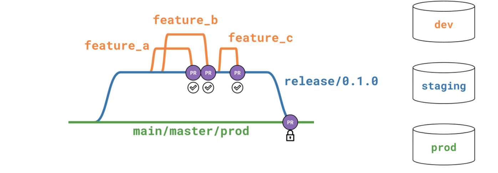

🎋 Branching
For branching we use the git flow branching model.
- main: reflects the production state of the project.
- dev/staging: includes the features contained before a release (= merge to the main production branch).
- feature/name: holding atomic changes to the project and to be merged into the development branch via separate peer-reviewed PRs.

👩⚖️ Main rules:
- Each feature branch/PR should represent one logical piece of work
- Make sure commits are related to the pull request and look clean
- Always perform pull before commit and push
- Do a git pull before you start working
- Regularly synchronize your local repos to the remote one
- Always create branches from the
devbranch - Try to minimize the time between creating a new branch and opening a PR
- By convention, name branches as feature/<branch_name> or fix/<branch_name> preferably containing a ID referencing a ticket of somesort
- Small independent fixes or bulk tests/docs can go into one branch
- Make sure that you don't forget to delete your feature branch after the PR has been merged
Submitting a PR: Feature PRs must be submitted to the development branch, and new releases occur when a PR is submitted from development to main. Every PR submission should follow the same template guidelines automatically provided when opening a PR.
It should consist
- a short description around the purpose of the request,
- the assigned JIRA ticket (if applicable),
- the changes made in bullet points,
- affected/introduced models
Merging
PRs should be reviewed by other developers and (or) project maintainers, preferably having enough information on what's the issue it solves, or what feature we are planning to implement with the underlying change. Also implemented changes should be frequently checked with business requirements to make sure that it brings the desired change.
PRs all-around the project should be the core responsibility of the project maintainer. Someone who oversees the business logic and can prioritize between developer tickets created for the sprint. Feature developers must ensure that the source branch does not have any conflict with the target branch. Upon merging a feature to development, the feature branch should be purged from the remote repository.
🌡️ Hotfixes:
Hotfixes to the main branch can be developed and integrated in one of the two following ways:
As a standard modification via the development branch. Since deploys are planned to be fairly frequent, many hotfixes may wait until the next scheduled release (in many cases a few days or less).
If the hotfix is very urgent, the following steps are required:
- Branch the hotfix off the main branch. Hotfix branch name should be prefixed with hotfix/.
- Make the changes and test them in your own dev environment.
- Create a PR.
- When the PR is submitted, the CI job will be triggered. Let it run. Make note of the errors it may create.
- Have somebody else to merge the PR. In these pressing situations it is even more important to have your work reviewed.
- Coordinate with business users on the most appropriate time to make the new/fixed data available.
- At such time, upon the successful PR test and merge, run the daily job..
PR Template
Copy this below into .github/pull_request_template.md: